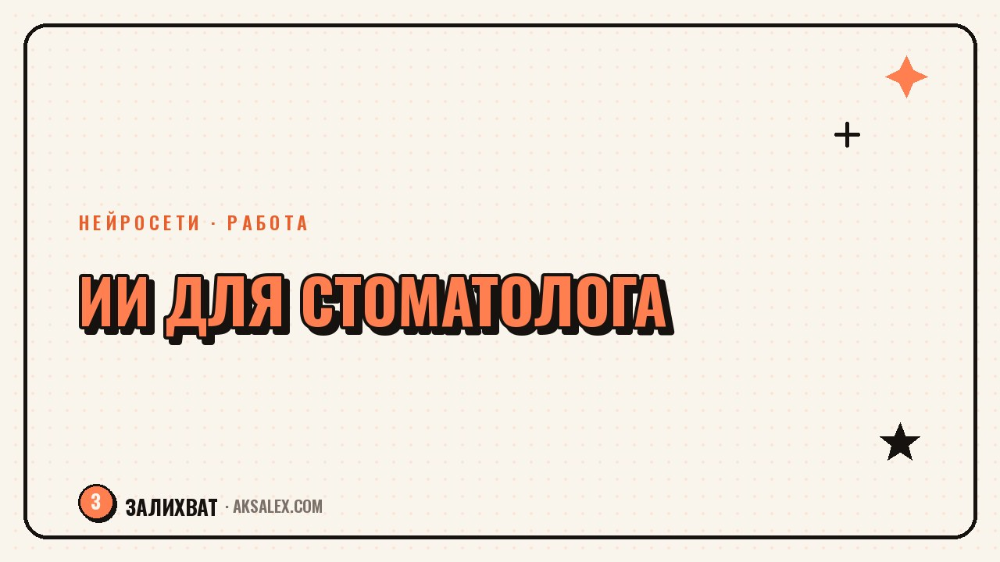

Нейросети для стоматолога: приём и документы клиники

После приёма пациента стоматологу нужно записать протокол, иногда составить план лечения в понятных словах, а в клинике ещё копится бумажная работа - памятки, ответы на вопросы в мессенджере, описания услуг для сайта. Нейросети не ставят диагноз и не лечат зубы, но здорово разгружают всё, что вокруг приёма: тексты, черновики документов и рутинную переписку. Разберём, где именно это работает и где нужно включать профессиональную осторожность.
Что в работе стоматолога можно отдать нейросети
У любой стоматологической практики есть слой задач, не связанный напрямую с лечением: заполнение карты приёма понятным языком, памятки по уходу после процедуры, ответы на типовые вопросы пациентов, посты для соцсетей клиники. Это именно та часть, где нейросеть экономит время, потому что берёт на себя первый черновик текста.
При этом важно держать границу: диагноз, план лечения и медицинские решения - это зона врача и только врача. Нейросеть можно использовать, чтобы быстрее оформить то, что ты уже решил сам, или чтобы объяснить пациенту сложный термин простыми словами - но не для того, чтобы она подсказывала клиническое решение.
Где нейросеть реально экономит время
- Оформление протокола приёма в структурированный текст
- Памятки пациентам по уходу после процедур
- Объяснение диагноза простыми словами для пациента
- Ответы на частые вопросы в чате клиники или соцсетях
- Черновики описаний услуг для сайта и прайса
- Перевод медицинских терминов на бытовой язык для памяток
Протокол приёма и записи для карты
Если ты наговариваешь заметки голосом сразу после приёма, нейросеть с распознаванием речи может превратить их в структурированный текст: что было сделано, какие материалы использованы, что назначено дальше. Это экономит время по сравнению с набором текста руками, особенно когда между пациентами всего несколько минут.
Важно: окончательная запись в карте - медицинский документ, и формулировки там должны быть точными и соответствовать твоей квалификации и требованиям клиники. Нейросеть годится для черновика и для того, чтобы быстро привести заметки в читаемый вид, а финальную версию ты всегда перечитываешь и правишь сам.
Нейросеть - это секретарь, который быстро набирает черновик за тобой. Диагноз, план лечения и ответственность за запись в карте остаются только твоими.
Памятки и объяснения для пациентов
Пациенты часто забывают половину того, что врач сказал на приёме - особенно если это связано со стрессом перед процедурой. Памятка «что делать после удаления зуба» или «как ухаживать за виниры в первую неделю» снимает часть повторяющихся вопросов и звонков в клинику. Нейросеть быстро соберёт черновик такой памятки, если ты дашь ей ключевые пункты: что нельзя делать, сколько дней, какие признаки должны насторожить.
То же самое работает для объяснения диагноза простыми словами. Например, ты можешь попросить нейросеть переписать медицинское заключение в формате «что это значит для вас и что будет происходить» - пациенту проще прочитать такой текст дома, чем вспоминать, что говорил врач на приёме.
Алгоритм подготовки памятки
- Запиши ключевые пункты: что нельзя, что можно, сроки
- Попроси нейросеть оформить это в понятный короткий текст
- Проверь медицинскую точность формулировок сам
- Добавь контакты клиники для вопросов
- Сохрани шаблон для похожих случаев в будущем
Документы и переписка клиники
В небольшой клинике администратор и врач часто сами отвечают на вопросы в мессенджерах: сколько стоит процедура, нужна ли подготовка, какие документы взять с собой. Нейросеть помогает собрать базу готовых ответов на частые вопросы, которую потом копируют и чуть адаптируют под конкретного пациента - это быстрее, чем печатать одно и то же каждый раз заново.
Для сайта и прайс-листа нейросеть пригодится, чтобы описать услугу понятным языком без медицинского жаргона - пациенту важно понимать, что его ждёт, а не читать термины из учебника. Дай нейросети факты (что входит в процедуру, сколько занимает по времени) и попроси написать для пациента, а не для коллеги-врача.
| Задача | Вручную | С нейросетью |
|---|---|---|
| Памятка пациенту после процедуры | 15-20 минут написания | 3-5 минут + проверка |
| Протокол приёма из заметок | 10-15 минут набора текста | 2-3 минуты |
| Ответ на частый вопрос в чате | 5 минут на каждый ответ | Готовый шаблон, 1 минута |
| Описание услуги для сайта | 20-30 минут | 5-7 минут + редактура |
Что нельзя доверять нейросети в стоматологии
Главное правило: нейросеть не ставит диагноз, не выбирает метод лечения и не заменяет консультацию врача. Любые медицинские решения принимает только специалист, который видит рентген, осматривает пациента и отвечает за результат лично. Использовать ИИ для подсказки клинического решения - риск, которого стоит избегать осознанно, вне зависимости от того, насколько уверенно звучит ответ нейросети.
Вторая зона осторожности - персональные данные пациентов. Загружать в публичные нейросети историю болезни с именами и диагнозами нельзя: это нарушает конфиденциальность. Если нужно привести в порядок текст с реальными данными пациента, убирай личную информацию перед тем, как отправлять текст в сервис, или используй корпоративные решения с нужным уровнем защиты.
Три правила безопасной работы
- Никогда не вставляй в публичную нейросеть ФИО и диагноз пациента вместе
- Любую медицинскую формулировку проверяй сам перед тем, как внести в карту
- Используй ИИ для текста и черновиков, а не для клинических решений
Частые вопросы
Может ли нейросеть помочь поставить диагноз пациенту?
Нет, диагноз и план лечения - исключительно зона врача, который осматривает пациента лично. Нейросеть можно использовать только для оформления текста и объяснений, но не для клинических решений.
Безопасно ли загружать данные пациентов в нейросеть?
Персональные данные вместе с диагнозом загружать в публичные сервисы нельзя - это риск для конфиденциальности. Перед работой с текстом убирай имена и другие идентифицирующие данные.
Какая нейросеть подходит для памяток пациентам?
Подойдёт любой текстовый чат-бот типа ChatGPT или Claude - дай ему ключевые пункты памятки, и он оформит понятный текст. Финальную версию обязательно проверяй на медицинскую точность сам.
Экономит ли нейросеть время администратора клиники?
Да, особенно на ответах на частые вопросы и описаниях услуг для сайта - можно собрать готовую базу шаблонов и адаптировать их под конкретного пациента вместо того, чтобы печатать всё заново.
Нужно ли специальное обучение, чтобы использовать нейросети в клинике?
Специальных курсов не нужно - достаточно чётко описывать задачу текстом и понимать, где заканчивается зона текста и начинается медицинское решение, которое нейросеть не принимает.
Раз тема оказалась полезной, вот что почитать следующим. Нейросети для повара: меню, себестоимость, техкарты и соцсети заведения без лишней возни.
Читать статью →а не вручную